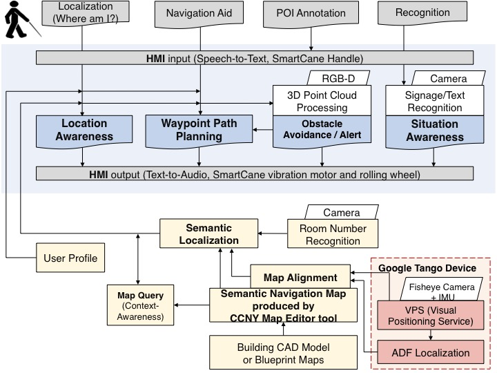
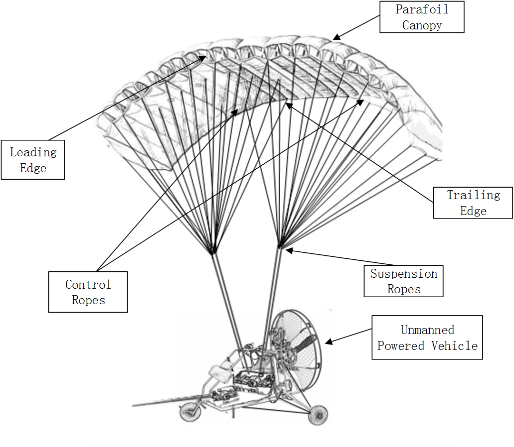
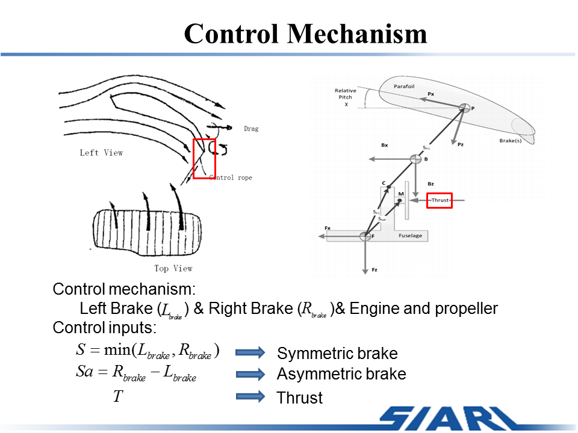
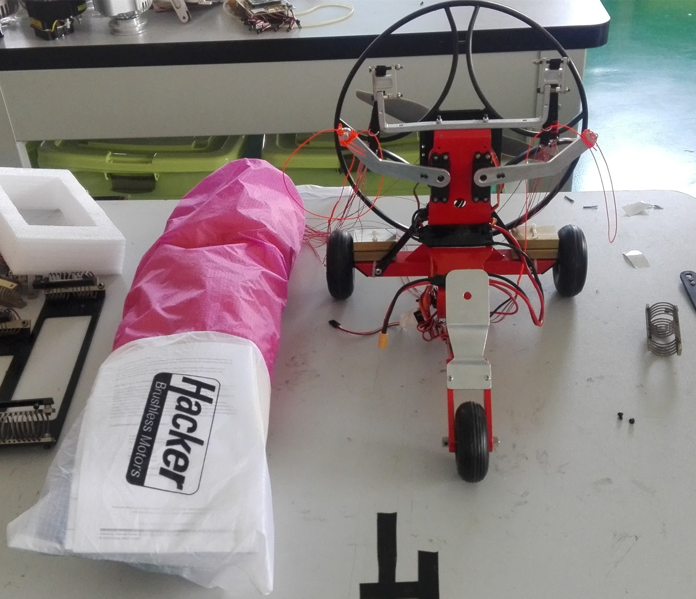
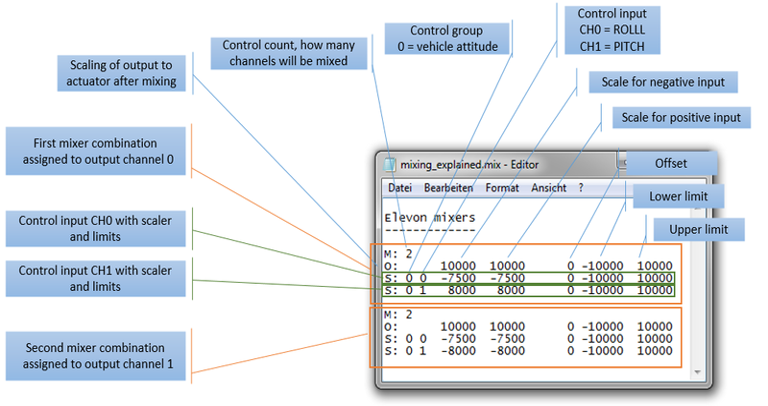
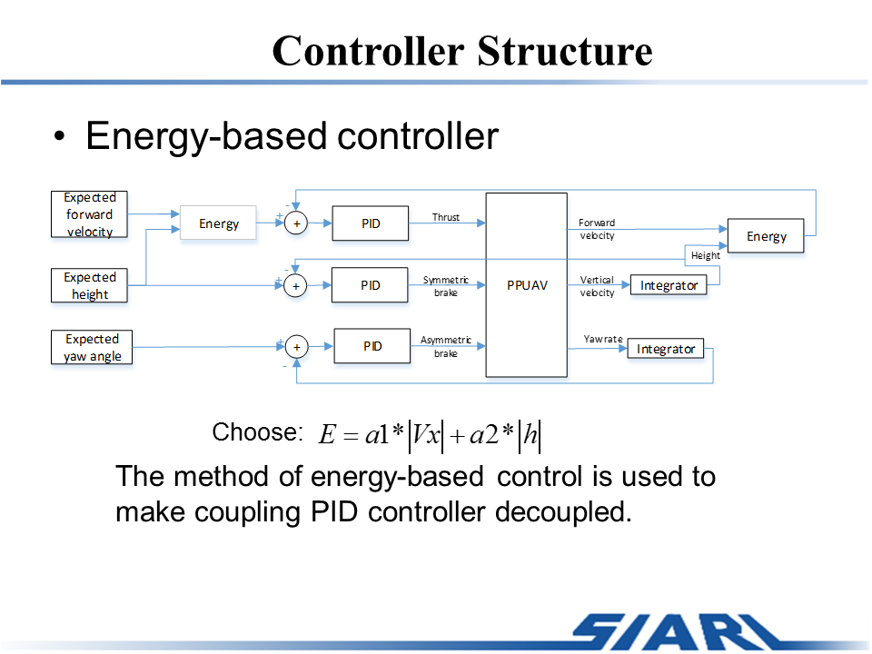
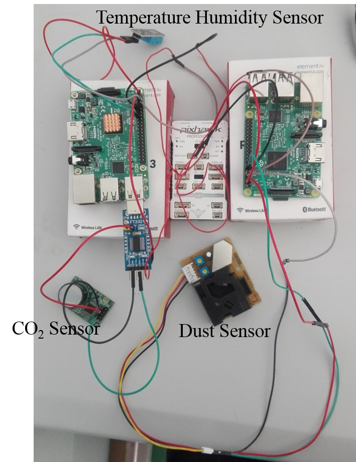
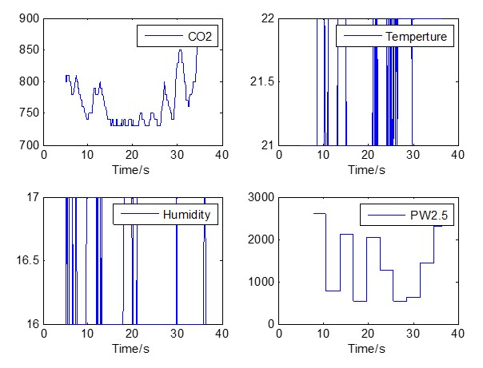

Smart Cane for Assistive Navigation (SCAN) to Help Blind Persons
2018-06-15
1 System Introduction
Smart Cane for Assistive Navigation (SCAN) to Help Blind Persons aims to provide indoor assistive navigation for for the Blind & Visually Impaired (BVI).
Indoor assistive navigation system has been researched extensively in recent years with the fast evolution of mobile technologies, from applying robotics simultaneous localization and mapping (SLAM) approach, deploying infrastructure sensors to integrating GIS indoor map databases.
Indoor semantic map database is built to model the environment spatial context-aware information based on Google Tango visual positioning service (VPS), then a TinyYOLO (You-only-look-once) convolutional neural network (CNN) model is applied on the Tango Android phone for real-time moving person recognition and tracking.

PPUAV consists of parafoil canopy, payload, suspension lines and GN&C system. For the parafoil, deployment of the right (or left) brake causes a significant drag rise and a small lift rise on the right (or left) side of the canopy. And the above effects cause PPUAV to turn right with slight roll movement when a right (or left) brake is deployed. With an engine installed on the back of the payload, PPUAV can adjust its forward and vertical velocities.



2 PX4 Firmware for PPUAV
Project link: https://github.com/SIA-PPG
PPUAV is not supported officially by PX4, so customized Mixer for PPUAV is needed.

3 Controller: Energy-based Controller

4 Additional Sensors for Environment Monitoring


5 Video
flight test: Youtube